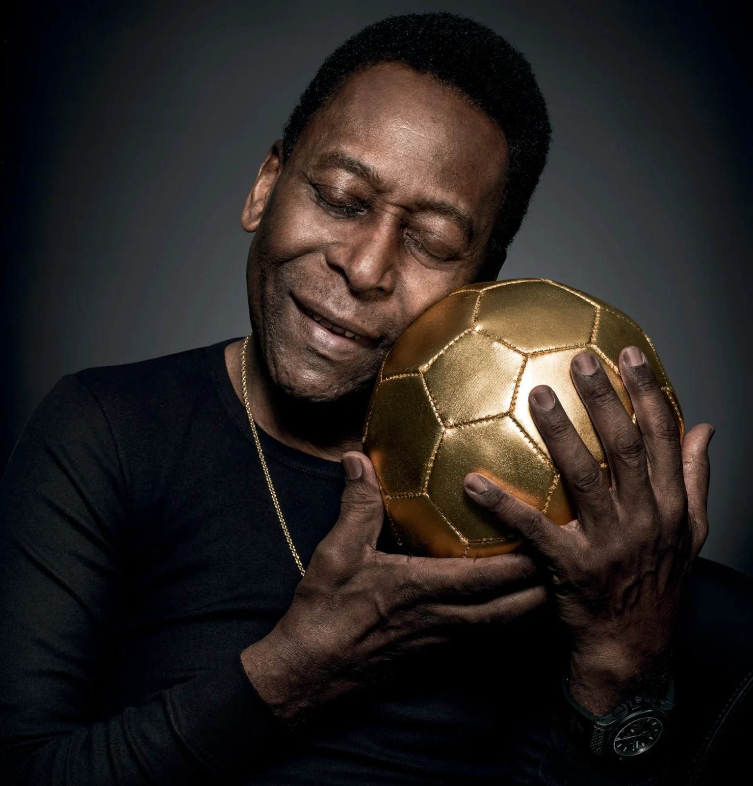
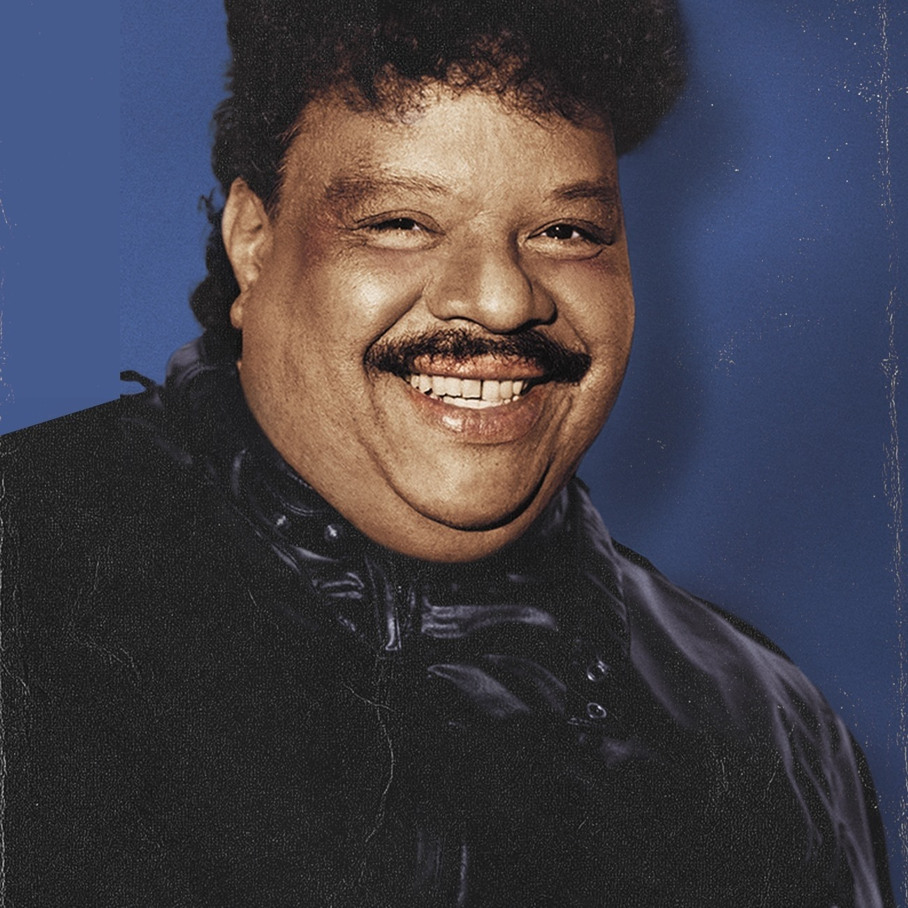
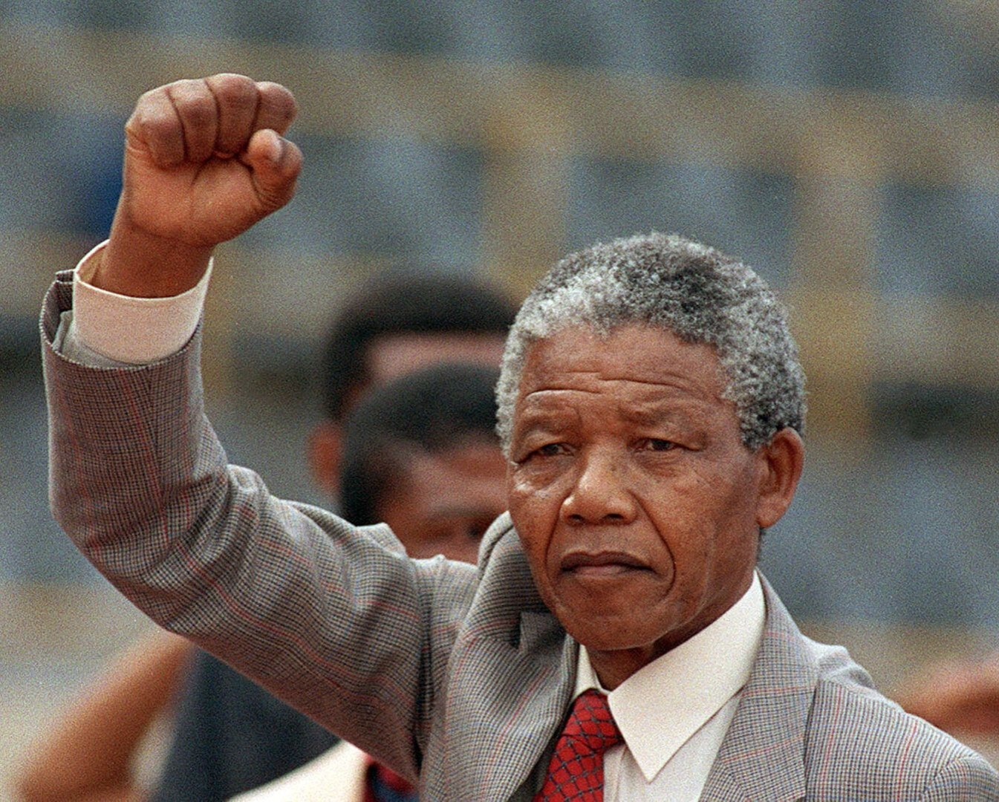

Consiencia Negra
Pelé (Jogador de Futebol)

×
Pelé (Jogador de Futebol)
Pelé não foi apenas um jogador excelente, mas também se tornou um símbolo inabalável tanto no Brasil quanto fora do país, inspirando inúmeros atletas e fãs, com seu carisma, agilidade e legado incomparável.
Tim Maia (Cantor e Compositor)

×
Tim Maia (Cantor e Compositor)
Tim Maia não se limitou a ser um notável cantor e compositor; ele representou uma verdadeira revolução na música do Brasil, ultrapassando barreiras e introduzindo uma nova sonoridade no país. Com seu estilo único e seu amor pela música, ele deixou um legado que perdura por gerações, consolidando sua posição como um dos principais expoentes da música brasileira.
LeBron James (Jogador de Basquete)

×
LeBron James (Jogador de Basquete)
LeBron James vai além de ser apenas uma figura lendária do basquete; ele representa um padrão de excelência e liderança, tanto dentro quanto fora das competições. Com uma trajetória inigualável, êxito nos negócios e uma dedicação inabalável a causas sociais, ele revolucionou o conceito de ser um atleta completo, deixando um legado profundo e durável.
Nelson Mandela (Líder Sul-Africano)

×
Nelson Mandela (Líder Sul-Africano)
Nelson Mandela transcendeu a figura de um líder sul-africano; ele se tornou uma referência mundial, demonstrando que é viável enfrentar a opressão com bravura, resiliência e um sentimento de perdão. A sua existência e legado fomentam a esperança, a paz e a justiça, e ainda inspiram aqueles que batalham por um mundo mais justo e pacífico.